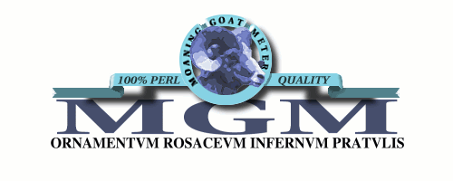
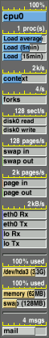

[ home | FAQ | download | troubleshooting | manual | cvs | mailing lists ]
You need:
Perl 5 (5.004_04 or later recommended) with the Tk module installed
(Tk 8 recommended). Debian's Perl with the Perl-Tk package
(found under 'interpreters') will do nicely.
MGM is not Linux only! That said, I've not yet written many modules
for other platforms; most of the statistics modules use Linux's /proc
filesystem (equivalent statistics are available through different
means on other platforms). I or someone else will likely flesh things
out on other OSes as time goes on.

the MGM FAQ interview
"Why MGM?"
Xload, procmeter3 and xosview are fine, fine pieces of software
(perhaps a bit hard to read). But... dammit... at a time when geeks are
cool, green jumpsuits stalk the streets and Volkswagen is hip again,
they're just too dull. Dull, dull, dull.
Evil geniuses generally have a finely honed esthetic sense which they
choose ignore whenever possible. However, evil geniuses do need
something good looking, ultra sweet, way too big and above all tacky
as hell to bolt onto the personal programming experience. This
code is *it*.
Think of it as the SUV mentality applied to strollers. Bigger than
the kid? Hell, it's bigger than Mom pushing it. You can't even
*find* the kid.
"What is this software good for?"
On the serious side for a moment, MGM is thoroughly inspired by
procmeter3; it is a load utility that monitors system statistics like
CPU usage, disk usage, network, battery, memory, etc. A few other
things are thrown into the stock mix (like a clock, a spinning fish, a
phase-of-the-moon display, etc). MGM is module based; it's easy to
write new modules and your own readouts.
Getting back to our theme for a moment, the *real* fun is when the
resident 'all software is bloated' complainer -- you know, the programmer
who constantly whines about how if *he* wrote a web browser, it would
fit in 16k... Every group has one -- notices MGM.
Don't tell him right away it's written in Perl; it looks cute,
possibly well written, probably small. Lead him on by mentioning how
elegant the code is, how it has little-to-no impact on the system load
it monitors. Go ahead and prove it; at this point he'll eagerly
devour the volunteered 'ps' listing. He might get as far as the CPU
usage number but chances are he'll notice the memory footprint first.
If you're feeling very clever, set it up so that EMACS (a favorite
target of a bloat-moaner) shows up in a nearby line for comparison
purposes. Plug your ears during the scream.
Go ahead, sell tickets to the spectacle. For the grand finale, offer
him a copy!
"Why name it 'the Moaning Goat Meter'?"
Long story, but there is a reason. The short version is that a dying
cooling fan (in this case in a SCSI disk enclosure) managed to do
convincing impressions of an amarous goat during pauses in
group conversation.
This software is named after that fan.
"I'm not an evil genius yet. Will MGM make me cool? Will it
improve my hacking skills?"
You're kidding, right?
"What about my social life?"
The software equivalent of a depleted uranium lawn gnome? Highly unlikely.
"What about the babes/hunks? Will MGM get me the babes/hunks?"
I don't care to speculate.
"Why does MGM use so much memory?"
In one word, "Perl". In a second word, "Tk". The fact that the
entire panel is rendered as pixmaps actually adds very little to the
memory usage. It will probably make some sense to go to a straight
Perl/Xlib implementation at some point, but that would be for
elegance, not practical benefit. For the time being, Tk saved some
extra work, and I have Real Work to worry
about
On the upside, you know exactly why it's so damned big; it's not so
much larger a memory footprint than, say, procmeter3. Nor is MGM
slow; despite the size, it's remarkably light-duty (unbelievably so if
you consider it really is 100% written in Perl).

"It's still absurdly large. It's bigger than Emacs! My pitiful little
machine is swapping like a wounded moth! Will you deal with memory
usage in later versions?"
Here's a nickel. Go buy more memory.
"Buy more memory? That's your strategy to handle using way too much?"
It's half the strategy that's made Bill Gates $100B richer.
"That's... that's... so evil!"
Yes! Evil genius! EVIL! What word
in 'evil' is failing to sink in? This software is an abomination in
every sense of the word! Run it! Hug it! Feel the power of the Dark
Side!
"You're not going to start talking with a Slavic accent are you?"
Nyet. But if you hear moaning goats followed by a musical apocalypse,
that would be me with bagpipes.

MGM will not get your whites whiter or your colors brighter. It will,
however, sit there and look spiffy while sucking down a major
honking wad of RAM.
MGM, Xiphophorus and their logos are trademarks (tm) of
Xiphophorus. These pages are
copyright (C) 1994-1999 Xiphophorus. All rights reserved.